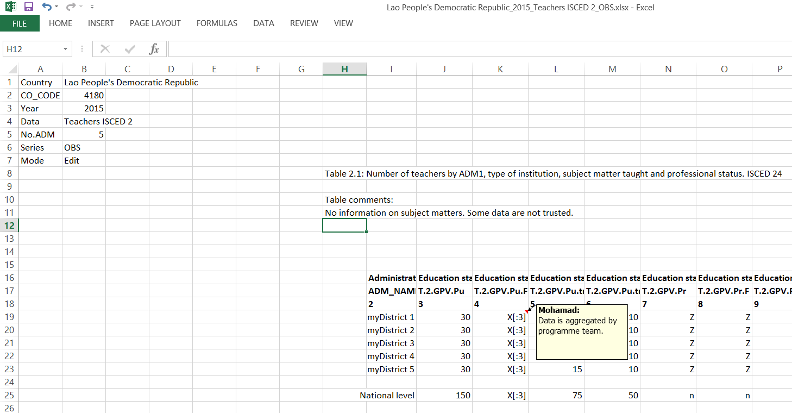

Regional Module User Manual
Table of Contents
- 1. Regional Module Graphical User Interface (GUI)
- 2. Indicators
- 2.1. Percentage of female teachers
- 2.2. Percentage of newly recruited teachers
- 2.3. Pupils teachers ratio
- 2.4. Percentage of trained teachers
- 2.5. Percentage of private teachers
- 2.6. Percentage of non-permanent teachers
- 2.7. Percentage of permanent teachers
- 2.8. Attrition rate
- 2.9. Mean age
- 2.10. Mean years of experience
- 2.11. Highest level of educational attainment
- 2.12. Percentage of teachers by years of experience
- 2.13. Percentage of teachers by age
- 2.14. Dissimilarity index
- 3. Adding Indicators
- 4. Code Documentation

Figure 1: Screen shot of RM_GUI.
1 Regional Module Graphical User Interface (GUI)
This document explains how to use the Regional Module (RM) questionnaire management system (RMS) GUI. There are four main frames in the GUI that could be seen in Figure 1.
- General information: general session and user information as the user name and database location, main working directory, ..etc.
- Importing questionnaire to the database: tools to import or validate a single questionnaire.
- Exporting data or indicators to Excel: tools to export and visualize the raw data or indicators that are already in the database.
- Status: a panel that outputs updates on the carried procedures, including any errors. Shown in the bottom of the interface.
Each frame, excluding the Status panel, has a specific subsection below that explains in details how to use the available tools.
1.1 General information
This frame holds information that are essential for all tools in other frames, and will be used all over this guide.
- User prints the automatically retrieved user name from the windows login information. This user name is used to track user changes to the data as will be later explained.
- Main working directory is the path of the main folder where all the other mentioned sub-folders are located. Basically, it is the folder that contains all the software, from code to documentation. For more details see Software folder tree.
- Database shows the path to the physical database (
.dbfile). In Figure 1, it is in the sub-folderDatabaseof the main folder as indicated by/Database/Prod.db. For example, if the main directory is/Desktop/RMSthen the database file is at/Desktop/RMS/Database/Prod.db. - Log folder holds validation and data reports every time a user attempts to validate, check only or insert the data. It is also a sub-folder of the main directory. See Sections 1.4 and 1.5 for more details.
- Output folder is the default folder where exported Excel workbooks are saved if no other folder is specified. Note that you can specify another output folder, see note in Exporting data options.
- Import backup folder holds backups of every inserted Excel workbook. A copy of the Excel workbook is saved with time and date stamps attached to its name.
- Data in the General information frame are only editable from the scripts, not from the GUI.
- Only the Output folder folder is editable through the export panel, see note in Exporting data options.
1.2 Importing questionnaire to the database
To Insert a questionnaire to the database, follow these steps:
- Click on the
Browse..button that is adjacent tofilelabel and select a file. - Validate the file by clicking on
Validatebutton, since there are specific pre-processing checks to make sure that it conforms with the coding scheme. If the checks are passed, the Status panel will indicate with a note on the lines ofValidation successful, see report in: Log/Lao People's Democratic Republic_16-01-22-11-33_validation.txt
otherwise on the lines of
Pre-processing validation failed. Some errors exist see log file in: Log/Lao People's Democratic Republic_16-01-22-11-35_validation.txt
In both cases a validation report is saved in the
Log folder, and should automatically open if the boxOpen validation reportis ticked. - If validation passed, insert the questionnaire by clicking on
Insert. The file is inserted to the database and acsvdata report is generated and saved in theLog folder, and also should automatically open if the box namedOpen data reportis ticked. A note on the lines of will appear in the Status panel.INSERTION STEP Inserting C:/Users/Mohamad/Documents/GitHub/RMS/Import/ RM_Lao People's Democratic Republic_2015_15-11-19-23-46.xlsx Checking that region values add to the country value...Test passed. Checking that parts are less than the totals...Test passed. Checking sums of columns... ----------Questionnaire Insertion finished.----------. Data report written to: Log/Lao People's Democratic Republic_16-01-22-11-40_data_report.csv
The steps above are simplified. For more details about the pre-processing checks and data report please refer to Sections 1.4 and 1.5.
- Only files with
.xlsxextensions are inserted. - A copy of any inserted file is saved to the
Exportsub-folder with time and data stamps attached to their names to indicate the time of inserting. - All validation files and data reports are saved to the
Log folder, while some information is shown in the Status panel.
About the checkboxes:
- Import to REP is a security checkbox that stops the user from inserting to the reported series (REP) by mistake. It is unticked by default, and works as follows, if the user attempts to insert some data to the reported series, even if the file validates, the user is not allowed unless this checkbox is ticked. Only under one exception it is allowed, if the inserted file is an original questionnaire, this becomes more clear in Exporting data options.
- Open validation report is a checkbox that is ticked by default to
automatically open the validation report resulting from the validation
step. Feel free to untick it as all the validation reports are saved in
the
Log folder. - Open data report is a checkbox that is ticked by default to
automatically open the date report resulting after inserting a
questionnaire. Feel free to untick it since all data reports are
saved to the
Log folder.
Finally, the button Check only allows the user to produce a data
report without validating nor inserting the data. The objective is to
streamline the cleaning process before finally inserting the data.
1.3 Exporting data or indicators to Excel
1.3.1 Choosing a country name, year and series
The Country drop-down list will only show names of countries with
data already in the database. This drop-down list has a live connection to the database, thus if one inserts a questionnaire for a new country, as shown in a Importing questionnaire to the database, the country's name should appear in the drop-down list directly.
Once a country name is selected, the Year drop-down list shows years
with available questionnaire data for the selected country.
The series drop-down list has three options:
- Reported (REP)
- where the original questionnaire is
inserted, given that no person has changed or modified any of
the data in this series. It is advised to only modify data in
the Observed series, thus the checkbox
Import to REPis created. - Observed (OBS)
- where the user is advised to modify and validate the data.
- Estimated (EST)
- where the disseminated data set should be, since the indicators are calculated from this series only.
1.3.2 Moving data between series
An original questionnaire is always inserted to the Reported series, to move it the Observed or Estimated series, choose first the country and then year, and then click on the buttons in the Move databases frame.
REP to OBSwould move the data from Reported to Observed series.OBS to ESTwould move the data from Observed to Estimated series.
1.3.3 Exporting data options
This section is important because it contains many necessary details to understand how the whole GUI works.
There are three ways to export data, sheet only, table only and alphanumeric code (AC) only. Each way has its own drop-down list.
- Sheet
- A drop-down list of all exportable questionnaire sheet names. Once a sheet is selected click on the adjacent
Exportbutton to export it to a new Excel workbook. To export all available sheets selectAllfrom the drop-down list. - Table
- A drop-down list with all tables of the questionnaire. By selecting one and clicking on the adjacent
Exportbutton a new Excel workbook is created that holds the selected table. - AC
- A drop-down list with all ACs that are in the questionnaire. By selecting one and clicking on the adjacent
Exportbutton a new Excel workbook is created that holds the data.
- The exported workbooks are by default saved to
Exportsub-folder of the main directory, with the naming conventionCounty Name-Year-Exported Variable-Series.xlsx. - Users can change where to save exported files by selecting a folder in the option
Select output folderas seen in theExporting data to Excelframe in Figure 1. If the user selects another output folder thanExport, only exported questionnaire data is placed there. Validation and data reports will still be saved to the log sub-folderLog.
1.3.4 Viewing modes
When any data is exported, they are exported based on two viewing modes, an Edit and a Read only mode.
-
Editmode - allows users to edit the data, comments and inclusions in the Excel sheet and reinsert them to the database as shown in Importing questionnaire to the database section. This works by preserving the table locations exactly where they are in the original questionnaire. Users will notice that the created Excel workbooks look very similar to the original questionnaire. Do not move tables from their original locations, reorder or change names of administrative divisions, change the sheet names, or delete any of the data in the configuration panel; in the top left corner as seen in Figure 2. You are only allowed to modify cell figures, comments and inclusions. The configuration panel is necessary to reinsert the data, without it the validation would fail and modifying it might harm the functionality of the software.
-
Read onlymode - facilitates the viewing of the data by
shifting tables to the left part of the Excel worksheet to
avoid unnecessary scrolling. However, the mode will not allow users to reinsert the data back in the database, since the
tables or Acs are not in the exact location as
they are in the original questionnaire. If users attempt to
insert a
Read onlymode file, the validation step will fail, hence not allowed to import.
Figure 2: Screen shot of the top left corner of an exported Excel sheet which shows the configuration panel.
- The viewing mode is chosen by the software. It is set to
Editmode if a sheet or the whole questionnaire is exported, otherwise it is set toRead onlymode. Users can know the mode by looking at the configuration panel in any Excel sheet as seen in Figure 2. - Users are only allowed to select from the drop-down list, or type manually the names of sheets, tables or ACs. If the users type anything else, the software will reject it.
1.3.5 Calculating indicators and exporting
Before exporting any indicators, we need to calculate them. For the
selected country and year the Calculate button in the indicator
sub-frame will calculate all indicators from the data in the
Estimated series. Therefore, users must make sure that data exist in
the Estimated series, once the data is there, select Estimated in the Series drop-down list and click on Calculate. Once all indicators are calculated, users can
extract them using one of the following methods
- Direct extraction
- By selecting from the drop-down list or
typing the indicator ID (IND_ID) and clicking on the adjacent
Extractbutton. To extract all indicators select or typeAll. - Wildcard
- Since the huge list of indicators, users can
extract groups of indicators using name patterns, where
%substitutes for zero or more characters and_substitutes for a single character. For example,- to extract all indicators for teachers of ISCED 1 in the
public sector you can type
%T.1.Pu%, since all requested indicators have the patternT.1.Puin their name. - to extract all the percentage of teachers with ISCED 2 or
less qualification in all ISCED levels, type
EA2m%, since all of them start with the patternEA2m. If the interest is in the public sector only, typeEA2m%.Pu. - to extract the percentage of female teachers in ISCED levels 1, 2, and 3,
but not 2 and 3, type
FT._, since all have the patternFT.in their name and_substitutes for a single character.
- to extract all indicators for teachers of ISCED 1 in the
public sector you can type
Note that wildcards are only applicable to indicator extraction, not raw data.
- Similar to the extraction of raw data, indicators are extracted for the selected country and year, for all administrative divisions. Thus even if you select a single indicator to extract, the result is a table of one column and a number of rows corresponding to the number of administrative divisions plus the national level.
- Some indicators, for example the max and min of an indicator, is only calculated for the national level, nonetheless, the extraction would result in a table of 1 column and all the administrative division cells are empty, while the national level holds the indicator figure.
- If indicators are incalculable because of missing data or inclusions, the figure will be replaced by resulting magnitude code in the respective cell. If the cell is empty, either the indicator is a national level indicator or the Estimated series is empty.
- To understand indicator magnitude see Column operation section for the discussion on algebras.
- Indicators are always sorted alphabetically.
- Exported indicator files follow the naming convention
County Name-Year-Indic-indicator name.xlsx, when the use of wildcards,%is replaced withxx.
For the current version of the software, these are the list of calculated indicators:
- Percentage of female teachers
- Percentage of newly recruited teachers
- Pupils teachers ratio
- Percentage of trained teachers
- Percentage of private teachers
- Percentage of non-permanent teachers
- Attrition rate
- Mean age
- Mean years of experience
- Highest level of educational attainment
- Percentage of teachers by years of experience
- Percentage of teachers by age
- Dissimilarity index
For more details about the computational methods refer to Indicators section.
1.3.6 Record format exporting
Record format exporting, in the frame Direct SQL extraction:, allows an easy access to the SQL database, for raw data and indicators. Basically, each data figure will appear in its own row, with the corresponding dimensions,
- CO_SHORT_NAME: the country short name,
- CO_CODE: the country code,
- ADM_NAME: the administrative division name,
- YEAR: data reference year,
- MC_ID: the numerical version of the AC code, only for raw data,
- AC: the alphanumeric code of the raw data or indicator,
- FIG: the actual figure.
To extract data, you need to use the following input format in the given text box of the Direct SQL extraction: frame:
type-series[co_code1(adm1, adm2, ...); co_code2(adm1, adm2, ...); ...; YEAR; AC]
where
- type
- is either
rawto extract raw data, orindicto extract indicators. - series (optional)
- is either
rep,obsorest, the default isestas in the case for indicators. - co_code (optional)
- you can pass a series of country codes with the following possible formats:
- co_code := for all administrative divisions for this country.
- co_code(1) := for administrative division code 1 for this country.
- co_code(0) := for the national level data only for this country.
- co_code(0,1) := for the national level data and administrative division code 1 for this country.
- leave empty := as indicated by (optional), it will extract all countries and administrative divisions in the database.
- any wrong co_code is ignored.
- YEAR (optional)
- you can pass years in the following formats:
- yyyy := for a specific year, as 2014 or 2015.
- yyyy:yyyy := for a range of years, as 2013:2015, would extract all data between 2013 and 2015, inclusive.
- leave empty := for all years.
- AC
- an exact alphanumeric code or with a wildcard must be passed. Users can extract groups of indicators or raw data using name patterns, where % substitutes for zero or more characters and _ substitutes for a single character. For examples see section Calculating indicators and exporting on wildcards.
Exported data are saved in the Export folder if no other folder is specified, under the naming convention record_format_type-series_AC.xlsx, where in the case of wildcards, % is replaced with xx. This is indicated in the Status panel as well.
For example:
raw-obs[4180; 2014; T.1]to extract allT.1raw data for all administrative divisions from the Observed series for 2014, country 4180. If no data exist, the file would be empty.raw[4180(2,3,0); ; T.1]to extract allT.1raw data from the Estimated series for all administrative divisions code 2, 3 and national level for 0, for country 4180, for all years.indic[; ; %T.2%]to extract all indicators with the patternT.2in their alphanumeric code, for all countries, administrative divisions and years.indic[;2011:2015;%T.2%]to extract all indicators with the patternT.2in their alphanumeric code, for all countries and administrative divisions, for years between 2011 and 2015, inclusive.
1.3.7 Deleting data
By selecting a country and year from the drop-down list and clicking Delete questionnaire, this would delete all data and indicators associated with that specific country and year. The drop-down list should not show the deleted data after a refresh.
1.4 Validation report
A validation report is created and saved in the Log sub-folder
every time the user attempts to insert a questionnaire by clicking on
the Validate button. It includes all confirmations and errors and
have the naming convention as Country
Name-Year-Series-Data Type-Date-Time.txt.
The idea of the validation is to list critical errors with the selected file. Only if all the validation checks pass the questionnaire is then allowed to be inserted.
The validation check the below conditions, all failed conditions are saved and also printed to the Status panel:
- In case of an original questionnaire format
- checks are
- ADM label, i.e., Province, district etc, is filled.
- number of ADM is a positive integer.
- the ADM names are filled.
- the correct number of sheets are available with correct original names.
- reference year is filled and an integer, from cell
M14in "Policy information" sheet. - Any "No" in the "Checking sheet" is copied to the validation report.
- In case of an
Editmode format - checks are
- worksheet must be in
Editmode. - configuration panel is properly filled.
- no missing information.
- labels of configuration are in the proper order of
[Country, CO_CODE, Year, Data, No.ADM, Series,Mode]. - mode defined as "Edit".
- year is an integer bigger than zero.
- series is one of the following
[OBS,REP,EST]. - country code matches the one taken from the database using the provided country name.
- number of ADM is a positive integer. This variable is taken from the configuration panel, thus do not change it.
- worksheet must be in
- In General
- checks are
- check that all data values are either a number, inclusion (X or x), Z, z, A, a, N, n, M or m. Otherwise, validation fails and error is printed.
For more technical information, see Preprocessing section.
1.5 Data report
At this step if the validation checks have passed, once the user
clicks on the Insert button, a data report is created and saved in
the Log folder. If the checkbox Open data report is ticked, the
report will automatically open. Also users can invoke the creation
of a data report without validating or inserting the file, by
clicking on the Check only button.
The data report checks the following and lists any issues:
- In case of an original questionnaire format
- checks are
- if ADM names exists in database they must equal the ones in the questionnaire, otherwise prints an error. This mean you can only change ADM names after they have been created by accessing the database directly, and if you try to reinsert the original questionnaire for the same year with reordered or changed region names, it will fail.
- In General
- checks are
- all columns must sum to the national level total.
- all sub-category must sum to the total. For example, public and private data must sum to the total.
- all partial category data must be less than or equal to totals. For example, female data must be less than or equal to total.
Note, for all the cells that have missing data (m), inclusion (x), or inapplicable (z), the inequality or sums tests are ignored.
For more technical information, see Preprocessing section.
1.6 Audit trail
To keep track of changes to individual data and indicators, including figures, qualifiers, inclusion codes, and magnitudes, we have implemented an audit functionality in the backend (SQL), that records any changes to the data. This doesn't include data comments or table comments. We call this functionality Audit trail. Note that Audit trail tables are not accessible from the software interface (GUI), rather they function in the backend and only accessible by directly accessing the SQL database.
There are two main tables that keep track of changes, one for raw (meter) data called METER_AUDIT_TRAIL, and the other for indicators called INDICATOR_AUDIT_TRAIL. Their structure is very similar and could be combined in one table, nevertheless, for more clarity we separated the indicators from raw data.
In essence, every time there is a change in a data, both the old and new information is recorded with a timestamp and user name. The following two subsections discuss in more details how changes are recorded and how to understand and read these SQL tables.
1.6.1 Data audit trail
METER_AUDIT_TRAIL is the SQL table that records changes in raw data and metadata. Basically, any time there is a change in a raw figure or its metadata, which includes magnitudes (inclusion, missing,..) and qualifiers, both the new and old figures and metadata are recorded with the change timestamp and the user name. This change happens in the cleaning process, when the user attempts to modify data directly in Excel and reinserts it into SQL. Thus every time an Edit mode Excel file is validated and reinserted, the data is compared to what is in the SQL database, and any changes are recorded.
The following is the schema of the SQL table, where
MC_IDis the numeric reference of the data and corresponds to an AC.CO_CODEis the country code.ADM_CODEis the administrative division code.MC_YEARis the data year.EM_FIGis the actual data figure.MQ_IDis the data qualifier.MG_IDis the data magnitude.SYS_DATAis the internal local time to when the change has happened.
CREATE TABLE METER_AUDIT_TRAIL( Audit_ID Integer , -- auto-increment ID MC_ID decimal(6, 0) NOT NULL, --numeric reference of the data CO_CODE decimal(6, 0) NOT NULL, -- country code ADM_CODE INT NOT NULL, -- Administrative Division code. MC_YEAR decimal(4, 0) NOT NULL, -- data year EM_FIG_NEW varchar(4000) NULL, -- new figure EM_FIG_OLD varchar(4000) NULL, -- old figure MQ_ID_NEW char(1) NULL, -- new qualifier MQ_ID_OLD char(1) NULL, -- old qualifier MG_ID_NEW char(1) NULL, -- new magnitude MG_ID_OLD char(1) NULL, -- old magnitude TYPE_MOD char(1) NULL, USER_NAME varchar(20) NOT NULL, -- user name SYS_DATE datetime DEFAULT (datetime('now','localtime')), --local timestamp SERIES varchar(10) NOT NULL, -- data series SURVEY_ID char(2) NULL, --- Regional model default is set to 'RM' PRIMARY KEY (Audit_ID ASC));
To read from the table, using sqlite3 connect to Prod.db file or any other database file you are using and follow standard SQL extraction syntax as
SELECT * from METER_AUDIT_TRAIL LIMIT 5;
to see the first 5 rows of the table, and
SELECT a.* from METER_AUDIT_TRAIL AS a LEFT JOIN EDU_METER_AID AS b ON a.MC_ID = b.EMC_ID WHERE b.AC ='NT.1' AND a.CO_CODE = 4180 AND a.MC_YEAR = 2014;
for all the changes that happened to NT.1, newly recruited teachers in ISCED 1, initial education, for country with code 4180 for data year 2014. Using the EDU_METER_AID facilitates the use of AC directly rather than the numeric representation (MC_ID).
1.6.2 Indicator audit trail
INDICATOR_AUDIT_TRAIL is the SQL table that records changes in indicators and their metadata. Any time there is a change in the indicator or its metadata, which includes magnitudes and qualifiers, both the new and old figures and metadata are recorded with change timestamp and the user name. This change happens when the user changes raw data and recalculates indicators by clicking on Calculate button in the indicator frame. Contrary to the data audit trail, users cannot manually change indicators and reinserts them, this functionality is not supported by the software.
The following is the schema of the SQL table, where
IND_IDis the alphanumeric name of the indicator.CO_CODEis the country code.ADM_CODEis the administrative division code.IND_YEARis the indicator data year.FIGis the actual indicator figure.QUALis the indicator qualifier.MAGNis the indicator magnitude.SYS_DATAis the internal local time to when the change has happened.SERIESis always set toESTsince indicators are only calculated from estimated series.
CREATE TABLE INDICATOR_AUDIT_TRAIL( Audit_ID Integer , -- auto-increment ID IND_ID varchar(50) NOT NULL, -- indicator ID CO_CODE decimal(6, 0) NOT NULL, -- country code ADM_CODE INT NOT NULL, -- Administrative Division code. IND_YEAR decimal(4, 0) NOT NULL, -- indicator data year FIG_NEW varchar(4000) NULL, -- new figure FIG_OLD varchar(4000) NULL, -- old figure QUAL_NEW char(1) NULL, -- new qualifier QUAL_OLD char(1) NULL, -- old qualifier MAGN_NEW char(1) NULL, -- new magnitude MAGN_OLD char(1) NULL, -- old magnitude USER_NAME varchar(20) NOT NULL, SYS_DATE datetime DEFAULT (datetime('now','localtime')), -- local change time SERIES varchar(10) NOT NULL, -- series is always EST PRIMARY KEY (Audit_ID ASC));
To read from the table, using sqlite3 connect to Prod.db file or any other database file you are using and follow standard SQL extraction syntax as
SELECT * from INDICATOR_AUDIT_TRAIL LIMIT 5;
to see the first 5 rows of the table, and
SELECT * from INDICATOR_AUDIT_TRAIL WHERE IND_ID ='FTP.1' AND CO_CODE = 4180 AND IND_YEAR = 2014;
for all the changes that happened to FTP.1, percentage of female teachers in ISCED 1, for country with code 4180 for data year 2014. Here we didn't need an EDU_METER_AID table sine indicators are referenced directly by their alphanumeric code, which do not have an equivalent numerical representation like in raw data.
1.7 A complete example
1.7.1 Inserting the original questionnaire
To give an example consider inserting a made-up questionnaire say for Laos for year 2015 that
is saved in a file Desktop/Example/LAOS-2015-Regional_Survey.xlsx, as seen in
Figure 3. First start the RM_GUI.py select the file
and click the adjacent Validate, the Status panel frame now shows:

Figure 3: Laos original questionnaire submission.
----------Date: January 22, 2016----------
VALIDATION STEP
Original questionnaire submitted with path:
C:/Users/Mohamad/Desktop/Example/LAOS-2015-Regional_Survey.xlsx
Number of administrative divisions: 5.0
ADM1 name provided: District
Administrative divisions:
myDistrict 1
myDistrict 2
myDistrict 3
myDistrict 4
myDistrict 5
Reference year: 2015
Country name is filled: Lao People's Democratic Republic
The correct number of sheets(11)has been submitted.
Warning: The questionnaire contains missing values.
----------Questionnaire Validation finished.----------.
Validation successful, see report in:
Log/Lao People's Democratic Republic_16-01-22-13-32_validation.txt
Since the checkbox Open validation report is ticked a validation report
should open and shows more or less similarly output to the one in the Status panel.
To insert the questionnaire, click on Insert. The Status panel should show:
INSERTION STEP Inserting C:/Users/Mohamad/Desktop/Example/LAOS-2015-Regional_Survey.xlsx Checking that region values add to the country value...Test passed. Checking that parts are less than the totals...Test passed. Checking sums of columns... ----------Questionnaire Insertion finished.----------. Data report written to: Log/Lao People's Democratic Republic_16-01-22-13-35_data_report.csv
Moreover, since the checkbox Open data report is ticked, the data
report should open up. For this example, the data report looks like Figure 4

Figure 4: Laos data report after insertion
This implies the import is successfully, and these are the created files:
- backup file:
RMS\Import\RM_Lao People's Democratic Republic_2015_16-01-22-13-38.xlsx, - validation report:
RMS\Log\Lao People's Democratic Republic_16-01-22-13-38_validation.txt, - data report:
RMS\Log\Lao People's Democratic Republic_16-01-22-13-38_data_report.csv.
1.7.2 Moving to and exporting from the Observed series.
After successfully inserting an original questionnaire, one is advised to move the data from
Reported to Observed series. Notice that Laos now appears in the Country drop-down
list. Select Laos and the corresponding year, then
click on REP to OBS button. The Status panel should show
Moving data for 4180-2015 Moved METER, INCLU and FTN tables from REP to OBS Moved COMMENT_TABLE table from REP to OBS Done.
The METER table is where the data is, INCLU table is where the inclusion codes are saved, and FTN is where the cell comments are saved. Finally, COMMENT_TABLE is where the table comments are saved.
Now, let's export Teachers ISCED 2 worksheet for cleaning. Select the country,
year and series from the drop-down lists and from the Sheet
drop-down list select Teachers ISCED 2. Before clicking on the
adjacent Export button, select the output folder to be your
Desktop.
The Status panel will have the confirmation seen in box
1, and the Excel workbook should look like Figure 5. Notice
the configurations panel in the top left corner, where the mode is Edit and the series is OBS.
Exporting Teachers ISCED 2 from OBS series for Lao People's Democratic Republic-2015.... File C:/Users/myUser/Desktop/Example/ Lao People's Democratic Republic_2015_Teachers ISCED 2_OBS.xlsx is created.. Done.

Figure 5: Exported Laos data from observed series.
1.7.3 Cleaning and reinserting
As mentioned before as long as the configuration panel is left
untouched and all tables are not moved, one can go ahead and change
the data, inclusion codes and insert cell and table comments. For
example, assume for some reason, for Laos-2015 data, we prefer to only
report the data under T.2.GPV.Pu in
column 3 and not to report T.2.GPV.Pu.F in column 4. We do this by using
inclusion code X[:3] to indicate that the current column is included in column 3.
Also we add a comment that the data is aggregated by programme team. Moreover, we add a table comment in cell H11, saying that some data is not trusted. See Figure 6 and compare it to Figure 5. Save and close the file.

Figure 6: Modified Laos data from observed series.
To validate and insert follow similar step as in Section 1.2. Start the RM_GUI select the modified file,
validate and insert it. If successful the Status panel should show
----------Date: January 22, 2016----------
VALIDATION STEP
Edited questionnaire submitted with path:
C:/Users/Mohamad/Desktop/Example
/Lao People's Democratic Republic_2015_Teachers ISCED 2_OBS.xlsx
Number of administrative divisions: 5.0
Configuration section of edited questionnaire is properly filled
Warning: The questionnaire contains missing values.
----------Questionnaire Validation finished.----------.
Validation successful, see report in:
Log/Lao People's Democratic Republic_16-01-22-21-23_validation.txt
----------Date: January 22, 2016----------
INSERTION STEP
Inserting C:/Users/Mohamad/Desktop/Example/
Lao People's Democratic Republic_2015_Teachers ISCED 2_OBS.xlsx
Checking that region values add to the country value...Test passed.
Checking that parts are less than the totals...Test passed.
Checking sums of columns...Test passed.
----------Questionnaire Insertion finished.----------.
Data report written to:
Log/Lao People's Democratic Republic_16-01-22-21-23_data_report.csv
otherwise it would list validation errors such as.
----------Date: January 22, 2016---------- VALIDATION STEP Edited questionnaire submitted with path: C:/Users/Mohamad/Desktop/Example /Lao People's Democratic Republic_2015_Teachers ISCED 2_OBS.xlsx Number of administrative divisions: 5.0 Configuration section of edited questionnaire is properly filled Error: Column 3 in table Table 2.1 has improper values. Warning: The questionnaire contains missing values. ----------Questionnaire Validation finished.----------. Pre-processing validation failed. Some errors exist see log file in: Log/Lao People's Democratic Republic_16-01-22-21-25_validation.txt
Since inserting is successful, again, the following files are created:
- backup file:
RMS\Import\RM_Lao People's Democratic Republic_2015_16-01-22-21-23.xlsx, - validation report:
RMS\Log\Lao People's Democratic Republic_16-01-22-21-23_validation.txt, - data report:
RMS\Log\Lao People's Democratic Republic_16-01-22-21-23_data_report.csv.
Now if you reexport the whole questionnaire, Teachers ISCED 2
sheet, or only Table 2.1 from the observed series, you should be
able to see the changes and comments made earlier.
1.7.4 Calculating indicators
To calculate indicators, first select the country name and year, then select the EST series. If the data is not yet in the EST series, move it by clicking on the button OBS to EST, maybe also REP to OBS if you haven't moved it yet to OBS series. Then click on the button Calculate. In around 30 seconds to a minute, the Status panel should indicated that the process is successful.
Successful..all indicators are calculated.
Now using the wildcards, lets extract the percentage of teachers with attainment of ISCED 5 and higher for all public institutions, one way of doing this is by typing EA5pPT.%Pu and clicking on the adjacent Extract. The file is now saved under the name Lao People's Democratic Republic_2015_INDIC_EA5pPT.xxPu.xlsx in the Export folder if no other folder is specified. This is indicated in the Status panel as seen below.
Extracting EA5pPT.%Pu for Lao People's Democratic Republic-2015.... File /home/mo/Desktop/Lao People's Democratic Republic_2015_INDIC_EA5pPT.xxPu.xlsx is created.. Done.
The file should also automatically open up and in this example it looks like this.
Figure 7: Screen shot of EA5pPT indicator
2 Indicators
This section describes how indicators are computed and what are the AC codes involved in their computation. For each indicator, we give a table with four columns. The first column has the ISCED level. The second one has the indicator alphanumeric code (IND_ID). The third column has the formula used to compute this indicator. The fourth column contains yes or no depending on whether the indicator for the highest and lowest among administrative divisions is also calculated.
Technical notations used across this section:
- The
Python methodlists the name of function in theLibraries/rmindicators.pyscript that calculates that indicator. - The superscript
Lmeans that the value from the previous year is being taken. For example, if the emco year is 2015 T.1L means the 2014 value of T.1. - Some indicators correspond to the highest and lowest value among all the regions of some indicator; A.Max and A.Min correspond to the highest and lowest value, respectively, among all the regions for the AC code A.
Some more specific technical notation exists for some of the subsections.
2.1 Percentage of female teachers
- Python method
- teachers_percentage_female
- IND_IDS information
| IND_ID | FORMULA | H & L | |
|---|---|---|---|
| ISCED 1 | FTP.1 | T.1.F/T.1 | yes |
| ISCED 2 | FTP.2.GPV | T.2.GPV.F/T.2.GPV | yes |
| ISCED 3 | FTP.3.GPV | T.3.GPV.F/T.3.GPV | yes |
| ISCED 23 | FTP.2t3.GPV | T.2t3.GPV.F/T.2t3.GPV | yes |
In this same method, there is the computation of female teachers percentage in public and private institutions. Their respective tables are the following:
| IND_ID | FORMULA | H & L | |
|---|---|---|---|
| ISCED 1 | FTP.1.Pu | T.1.Pu.F/T.1.Pu | yes |
| ISCED 2 | FTP.2.GPV.Pu | T.2.GPV.Pu.F/T.2.GPV.Pu | yes |
| ISCED 3 | FTP.3.GPV.Pu | T.3.GPV.Pu.F/T.3.GPV.Pu | yes |
| ISCED 23 | FTP.2t3.GPV.Pu | T.2t3.GPV.Pu.F/T.2t3.GPV.Pu | yes |
| IND_ID | FORMULA | H & L | |
|---|---|---|---|
| ISCED 1 | FTP.1.Pr | T.1.Pr.F/T.1.Pr | yes |
| ISCED 2 | FTP.2.GPV.Pr | T.2.GPV.Pr.F/T.2.GPV.Pr | yes |
| ISCED 3 | FTP.3.GPV.Pr | T.3.GPV.Pr.F/T.3.GPV.Pr | yes |
| ISCED 23 | FTP.2t3.GPV.Pr | T.2t3.GPV.Pr.F/T.2t3.GPV.Pr | yes |
2.2 Percentage of newly recruited teachers
- Python method
- newly_recruited_teachers
- IND_IDS information
| IND_ID | FORMULA | H & L | |
|---|---|---|---|
| ISCED 1 | NTP.1 | NT.1/T.1 | yes |
| ISCED 2 | NTP.2.GPV | NT.2.GPV/T.2.GPV | yes |
| ISCED 3 | NTP.3.GPV | NT.3.GPV/T.3.GPV | yes |
| ISCED 23 | NTP.2t3.GPV | NT.2t3.GPV/T.2t3.GPV | yes |
In this same method, there is the computation of newly recruited teachers percentage in public and private institutions. Their respective tables are the following:
| IND_ID | FORMULA | H & L | |
|---|---|---|---|
| ISCED 1 | NTP.1.Pu | NT.1.Pu/T.1.Pu | yes |
| ISCED 2 | NTP.2.GPV.Pu | NT.2.GPV.Pu/T.2.GPV.Pu | yes |
| ISCED 3 | NTP.3.GPV.Pu | NT.3.GPV.Pu/T.3.GPV.Pu | yes |
| ISCED 23 | NTP.2t3.GPV.Pu | NT.2t3.GPV.Pu/T.2t3.GPV.Pu | yes |
| IND_ID | FORMULA | H & L | |
|---|---|---|---|
| ISCED 1 | NTP.1.Pr | NT.1.Pr/T.1.Pr | yes |
| ISCED 2 | NTP.2.GPV.Pr | NT.2.GPV.Pr/T.2.GPV.Pr | yes |
| ISCED 3 | NTP.3.GPV.Pr | NT.3.GPV.Pr/T.3.GPV.Pr | yes |
| ISCED 23 | NTP.2t3.GPV.Pr | NT.2t3.GPV.Pr/T.2t3.GPV.Pr | yes |
2.3 Pupils teachers ratio
- Python method
- pupils_teachers_ratio
- IND_IDS information
| IND_ID | FORMULA | H & L | |
|---|---|---|---|
| ISCED 1 | PTRHC.1 | E.1/T.1 | yes |
| ISCED 2 | PTRHC.2.GPV | E.2.GPV/T.2.GPV | yes |
| ISCED 3 | PTRHC.3.GPV | E.3.GPV/T.3.GPV | yes |
| ISCED 23 | PTRHC.2t3.GPV | (E.2.GPV+E.3.GPV)/T.2t3.GPV | yes |
In this same method, there is the computation of newly recruited teachers percentage in public and private institutions. Their respective tables are the following:
| IND_ID | FORMULA | H & L | |
|---|---|---|---|
| ISCED 1 | PTRHC.1.Pu | E.1.Pu/T.1.Pu | yes |
| ISCED 2 | PTRHC.2.GPV.Pu | E.2.GPV.Pu/T.2.GPV.Pu | yes |
| ISCED 3 | PTRHC.3.GPV.Pu | E.3.GPV.Pu/T.3.GPV.Pu | yes |
| ISCED 23 | PTRHC.2t3.GPV.Pu | (E.2.GPV.Pu+E.3.GPV.Pu)/T.2t3.GPV.Pu | yes |
| IND_ID | FORMULA | H & L | |
|---|---|---|---|
| ISCED 1 | PTRHC.1.Pr | E.1.Pr/T.1.Pr | yes |
| ISCED 2 | PTRHC.2.GPV.Pr | E.2.GPV.Pr/T.2.GPV.Pr | yes |
| ISCED 3 | PTRHC.3.GPV.Pr | E.3.GPV.Pr/T.3.GPV.Pr | yes |
| ISCED 23 | PTRHC.2t3.GPV.Pr | (E.2.GPV.Pr + E.2.GPV.Pr)/T.2t3.GPV.Pr | yes |
2.4 Percentage of trained teachers
- Python method
- percentage_trained_teachers
- IND_IDS information
| IND_ID | FORMULA | H & L | |
|---|---|---|---|
| ISCED 1 | TRTP.1 | T.1.trained/T.1 | yes |
| ISCED 2 | TRTP.2.GPV | T.2.GPV.trained/T.2.GPV | yes |
| ISCED 3 | TRTP.3.GPV | T.3.GPV.trained/T.3.GPV | yes |
| ISCED 23 | TRTP.2t3.GPV | T.2t3.GPV.trained/T.2t3.GPV | yes |
In this same method, there is the computation of the percentage of trained newly recruited teachers.
| IND_ID | FORMULA | H & L | |
|---|---|---|---|
| ISCED 1 | TrNTP.1 | NT.1.trained/NT.1 | yes |
| ISCED 2 | TrNTP.2.GPV | NT.2.GPV.trained/NT.2.GPV | yes |
| ISCED 3 | TrNTP.3.GPV | NT.3.GPV.trained/NT.3.GPV | yes |
| ISCED 23 | TrNTP.2t3.GPV | NT.2t3.GPV.trained/NT.2t3.GPV | yes |
Finally, for the previous indicators this method also computes the previous indicators for public and private institutions. Their corresponding tables are the following:
| IND_ID | FORMULA | H & L | |
|---|---|---|---|
| ISCED 1 | TRTP.1.Pu | T.1.Pu.trained/T.1.Pu | yes |
| ISCED 2 | TRTP.2.GPV.Pu | T.2.GPV.Pu.trained/T.2.GPV.Pu | yes |
| ISCED 3 | TRTP.3.GPV.Pu | T.3.GPV.Pu.trained/T.3.GPV.Pu | yes |
| ISCED 23 | TRTP.2t3.GPV.Pu | T.2t3.GPV.Pu.trained/T.2t3.GPV.Pu | yes |
| IND_ID | FORMULA | H & L | |
|---|---|---|---|
| ISCED 1 | TRTP.1.Pr | T.1.Pr.trained/T.1.Pr | yes |
| ISCED 2 | TRTP.2.GPV.Pr | T.2.GPV.Pr.trained/T.2.GPV.Pr | yes |
| ISCED 3 | TRTP.3.GPV.Pr | T.3.GPV.Pr.trained/T.3.GPV.Pr | yes |
| ISCED 23 | TRTP.2t3.GPV.Pr | T.2t3.GPV.Pr.trained/T.2t3.GPV.Pr | yes |
| IND_ID | FORMULA | H & L | |
|---|---|---|---|
| ISCED 1 | TrNTP.1.Pu | NT.1.Pu.trained/NT.1.Pu | yes |
| ISCED 2 | TrNTP.2.GPV.Pu | NT.2.GPV.Pu.trained/NT.2.GPV.Pu | yes |
| ISCED 3 | TrNTP.3.GPV.Pu | NT.3.GPV.Pu.trained/NT.3.GPV.Pu | yes |
| ISCED 23 | TrNTP.2t3.GPV.Pu | NT.2t3.GPV.Pu.trained/NT.2t3.GPV.Pu | yes |
| IND_ID | FORMULA | H & L | |
|---|---|---|---|
| ISCED 1 | TrNTP.1.Pr | NT.1.Pr.trained/NT.1.Pr | yes |
| ISCED 2 | TrNTP.2.GPV.Pr | NT.2.GPV.Pr.trained/NT.2.GPV.Pr | yes |
| ISCED 3 | TrNTP.3.GPV.Pr | NT.3.GPV.Pr.trained/NT.3.GPV.Pr | yes |
| ISCED 23 | TrNTP.2t3.GPV.Pr | NT.2t3.GPV.Pr.trained/NT.2t3.GPV.Pr | yes |
2.5 Percentage of private teachers
- Python method
- percentage_private_teachers
- IND_IDS information
| IND_ID | FORMULA | H & L | |
|---|---|---|---|
| ISCED 1 | PrTP.1 | T.1.Pr/T.1 | yes |
| ISCED 2 | PrTP.2.GPV | T.2.GPV.Pr/T.2.GPV | yes |
| ISCED 3 | PrTP.3.GPV | T.3.GPV.Pr/T.3.GPV | yes |
| ISCED 23 | PrTP.2t3.GPV | T.2t3.GPV.Pr/T.2t3.GPV | yes |
2.6 Percentage of non-permanent teachers
This has three sets of symbols. One for the private sector, one for the public sector and one combined.
- Python method
- percentage_non_permanent_teachers
- IND_IDS information Private
| IND_ID | FORMULA | H & L | |
|---|---|---|---|
| ISCED 1 | FixTP.1.Pr | T.1.Pr.Fix/T.1.Pr | no |
| ISCED 2 | FixTP.2.GPV.Pr | T.2.GPV.Pr.Fix/T.2.GPV.Pr | no |
| ISCED 3 | FixTP.3.GPV.Pr | T.3.GPV.Pr.Fix/T.3.GPV.Pr | no |
| ISCED 23 | FixTP.2t3.GPV.Pr | T.2t3.GPV.Pr.Fix/T.2t3.GPV.Pr | no |
- IND_IDS information Public
| IND_ID | FORMULA | H & L | |
|---|---|---|---|
| ISCED 1 | FixTP.1.Pu | T.1.Pu.Fix/T.1.Pu | no |
| ISCED 2 | FixTP.2.GPV.Pu | T.2.GPV.Pu.Fix/T.2.GPV.Pu | no |
| ISCED 3 | FixTP.3.GPV.Pu | T.3.GPV.Pu.Fix/T.3.GPV.Pu | no |
| ISCED 23 | FixTP.2t3.GPV.Pu | T.2t3.GPV.Pu.Fix/T.2t3.GPV.Pu | no |
- IND_IDS information Combined
| IND_ID | FORMULA | H & L | |
|---|---|---|---|
| ISCED 1 | FixTP.1 | (T.1.Pr.Fix+T.1.Pu.Fix)/(T.1.Pr+T.1.Pu) | no |
| ISCED 2 | FixTP.2.GPV | (T.2.GPV.Pr.Fix+T.2.GPV.Pu.Fix)/(T.2.GPV.Pr+T.2.GPV.Pu) | no |
| ISCED 3 | FixTP.3.GPV | (T.3.GPV.Pu.Fix+T.3.GPV.Pr.Fix)/(T.3.GPV.Pr+T.3.GPV.Pu) | no |
| ISCED 23 | FixTP.2t3.GPV | (T.2t3.GPV.Pu.Fix+T.2t3.GPV.Pr.Fix)/(T.2t3.GPV.Pr+T.2t3.GPV.Pu) | no |
2.7 Percentage of permanent teachers
This has three sets of symbols. One for the private sector, one for the public sector and one combined.
- Python method
- percentage_non_permanent_teachers
- IND_IDS information Private
| IND_ID | FORMULA | H & L | |
|---|---|---|---|
| ISCED 1 | PermTP.1.Pr | T.1.Pr.Perm/T.1.Pr | no |
| ISCED 2 | PermTP.2.GPV.Pr | T.2.GPV.Pr.Perm/T.2.GPV.Pr | no |
| ISCED 3 | PermTP.3.GPV.Pr | T.3.GPV.Pr.Perm/T.3.GPV.Pr | no |
| ISCED 23 | PermTP.2t3.GPV.Pr | T.2t3.GPV.Pr.Perm/T.2t3.GPV.Pr | no |
- IND_IDS information Public
| IND_ID | FORMULA | H & L | |
|---|---|---|---|
| ISCED 1 | PermTP.1.Pu | T.1.Pu.Perm/T.1.Pu | no |
| ISCED 2 | PermTP.2.GPV.Pu | T.2.GPV.Pu.Perm/T.2.GPV.Pu | no |
| ISCED 3 | PermTP.3.GPV.Pu | T.3.GPV.Pu.Perm/T.3.GPV.Pu | no |
| ISCED 23 | PermTP.2t3.GPV.Pu | T.2t3.GPV.Pu.Perm/T.2t3.GPV.Pu | no |
- IND_IDS information Combined
| IND_ID | FORMULA | H & L | |
|---|---|---|---|
| ISCED 1 | PermTP.1 | (T.1.Pr.Perm+T.1.Pu.Perm)/(T.1.Pr+T.1.Pu) | no |
| ISCED 2 | PermTP.2.GPV | (T.2.GPV.Pr.Perm+T.2.GPV.Pu.Perm)/(T.2.GPV.Pr+T.2.GPV.Pu) | no |
| ISCED 3 | PermTP.3.GPV | (T.3.GPV.Pu.Perm+T.3.GPV.Pr.Perm)/(T.3.GPV.Pr+T.3.GPV.Pu) | no |
| ISCED 23 | PermTP.2t3.GPV | (T.2t3.GPV.Pu.Perm+T.2t3.GPV.Pr.Perm)/(T.2t3.GPV.Pr+T.2t3.GPV.Pu) | no |
2.8 Attrition rate
- Python method
- percentage_non_permanent_teachers
- IND_IDS information Private
| IND_ID | FORMULA | H & L | |
|---|---|---|---|
| ISCED 1 | TAttrR.1 | 100*(T.1L + NT.1 - T.1)/T.1L | no |
| ISCED 2 | TAttrR.2.GPV | 100*(T.2.GPVL + NT.2.GPV - T.2.GPV)/T.2.GPVL | no |
| ISCED 3 | TAttrR.3.GPV | 100*(T.3.GPVL + NT.3.GPV - T.3.GPV)/T.3.GPVL | no |
| ISCED 23 | TAttrR.2t3.GPV | 100*(T.2t3.GPVL + NT.2t3.GPV - T.2t3.GPV)/T.2t3.GPVL | no |
When using a previous year data, as T.1L, if the data is available it is used, otherwise we use the .m1 extension as T.1m1, which is collected from this years questionnaire.
2.9 Mean age
- Python method
- mean_age_level(level in ['T.1', 'T.2.GPV', 'T.3.GPV', 'T.2t3.GPV'])
- IND_IDS information
| IND_ID | FORMULA | H & L | |
|---|---|---|---|
| ISCED 1 | MAge.T.1 | ∑y in cat T.1.y × MP.y / ∑y in cat T.1.y | No |
| ISCED 2 | MAge.T.2.GPV | ∑y in cat T.2.GPV.y × MP.y/ ∑y in cat T.2.GPV.y | No |
| ISCED 3 | MAge.T.3.GPV | ∑y in cat T.3.GPV.y × MP.y/∑y in cat T.3.GPV.y | No |
| ISCED 23 | MAge.T.2t3.GPV | ∑y in cat T.2t3.GPV.y× MP.y/ ∑y in cat T.2t3.GPV.y | No |
where cat is Ag20m, Ag20t29, Ag30t39, Ag40t49, Ag50t59 and Ag60p. Midpoints (MP) are based on the following:
| Age in years | <20 | 20-29 | 30-39 | 40-49 | 50-59 | 60+ |
|---|---|---|---|---|---|---|
| Midpoints | 20 | 24.5 | 34.5 | 44.5 | 54.5 | 60 |
Note that all indicators are calculated for Total, Public and Private levels.
2.10 Mean years of experience
- Python method
- mean_exp_level(level in ['T.1', 'T.2.GPV', 'T.3.GPV', 'T.2t3.GPV'])
- IND_IDS information
| IND_ID | FORMULA | H & L | |
|---|---|---|---|
| ISCED 1 | MExp.T.1 | ∑y in cat T.1.y × × MP.y/ ∑y in cat T.1.y | No |
| ISCED 2 | MExp.T.2.GPV | ∑y in cat T.2.GPV.y× MP.y / ∑y in cat T.2.GPV.y | No |
| ISCED 3 | MExp.T.3.GPV | ∑y in cat T.3.GPV.y× MP.y / ∑y in cat T.3.GPV.y | No |
| ISCED 23 | MExp.T.2t3.GPV | ∑y in cat T.2t3.GPV.y× MP.y / ∑y in cat T.2t3.GPV.y | No |
where cat is Exp1t2, Exp3t5, Exp6t10, Exp11t15 and Exp15p. and Midpoints (MP) are based on the following:
| Experience in years | New | 1-2 | 3-5 | 6-10 | 11-15 | 15+ |
|---|---|---|---|---|---|---|
| Midpoints | 0.5 | 1.5 | 4 | 8 | 13 | 17 |
Note that all indicators are calculated for Total, Public and Private levels.
2.11 Highest level of educational attainment
- Python method
- percentage_teachers_attainment
- IND_IDS information
| Highest educational attainment | IND_ID | FORMULA | H & L |
|---|---|---|---|
| Lower secondary or Less | EA2mPT.IS | T.IS.EA.2m / T.IS | No |
| Upper secondary | EA3PT.IS | T.IS.EA.3 / T.IS | No |
| Post secondary | EA4PT.IS | T.IS.EA.4 / T.IS | No |
| At least tertiary | EA5pPT.IS | (T.IS.EA.5 + T.IS.EA.6+T.IS.EA.7+T.IS.EA.8)/T.IS | No |
| Unknown | EAukPT.IS | T.IS.EA.uk / T.IS | No |
IS stands for ISCED level which are [1, 2.GPV, 3.GPV, 2t3.GPV], combined with suffixes ['.Pu', '.Pr'] for public and private sub-category.
Note that all indicators are calculated for Total, Public and Private levels.
2.12 Percentage of teachers by years of experience
- Python method
- percentage_teachers_exp
- IND_IDS information
| Experience | IND_ID | FORMULA | H & L |
|---|---|---|---|
| 1 to 2 years | Exp1t2PT.ISCED | T.ISCED.Exp1t2/T.ISCED | No |
| 3 to 5 years | Exp3t5PT.ISCED | T.ISCED.Exp3t5/T.ISCED | No |
| 5 to 10 years | Exp6t10PT.ISCED | T.ISCED.Exp6t10/T.ISCED | No |
| 11 to 15 years | Exp11t15PT.ISCED | T.ISCED.Exp11t15/T.ISCED | No |
| more 15 than years | Exp15pPT.ISCED | T.ISCED.Exp15p/T.ISCED | No |
| Unknown | ExpukPT.ISCED | T.ISCED.Expuk/T.ISCED | No |
ISCED is [' 1', '2.GPV', '3.GPV', '2t3.GPV'], combined with suffixes ['.Pu', '.Pr'] for public and private sub-category.
Note that all indicators are calculated for Total, Public and Private levels.
2.13 Percentage of teachers by age
- Python method
- percentage_teachers_age
- IND_IDS information
| Age | IND_ID | FORMULA | H & L |
|---|---|---|---|
| Less than 20 years | Ag20mPT.ISCED | T.ISCED.Ag20m/T.ISCED | No |
| 20 to 29 years | Ag20t29PT.ISCED | T.ISCED.Ag29t29/T.ISCED | No |
| 30 to 39 years | Ag30t39PT.ISCED | T.ISCED.Ag39t39/T.ISCED | No |
| 40 to 49 years | Ag40t49PT.ISCED | T.ISCED.Ag49t49/T.ISCED | No |
| 50 to 59 years | Ag50t59PT.ISCED | T.ISCED.Ag59t59/T.ISCED | No |
| 60 years or more | Ag60pPT.ISCED | T.ISCED.Ag60P/T.ISCED | No |
| Unknown | AgukPT.ISCED | T.ISCED.Aguk/T.ISCED | No |
ISCED is [' 1', '2.GPV', '3.GPV', '2t3.GPV'], combined with suffixes ['.Pu', '.Pr'] for public and private sub-category.
Note that all indicators are calculated for Total, Public and Private levels.
2.14 Dissimilarity index
- Python method
- dissimilarity_index
- IND_IDS information
| Measures of inequality in the | IND_ID | FORMULA |
|---|---|---|
| All | DIndT.IS | \(\frac{1}{2} \sum_a\mid \frac{T.IS_a}{T.IS} - \frac{E.IS_a}{E.IS} \mid\) |
| Female | DIndT.IS.F | \(\frac{1}{2} \sum_a\mid \frac{T.IS.F_a}{T.IS.F} - \frac{E.IS_a}{E.IS} \mid\) |
| Teachers aged 50 and above | DIndT.IS.Ag50p | \(\frac{1}{2} \sum_a\mid \frac{T.IS.Ag50p_a}{T.IS.Ag50p} - \frac{E.IS_a}{E.IS} \mid\) |
| Newly recruited | DIndNT.IS | \(\frac{1}{2} \sum_a\mid \frac{NT.IS_a}{NT.IS} - \frac{E.IS_a}{E.IS} \mid\) |
| Math | DIndT.IS.Math | \(\frac{1}{2} \sum_a\mid \frac{T.IS.Math_a}{T.IS.Math} - \frac{E.IS_a}{E.IS} \mid\) |
| Reading and writing | DIndT.IS.Read | \(\frac{1}{2} \sum_a\mid \frac{T.IS.Read_a}{T.IS.Read} - \frac{E.IS_a}{E.IS} \mid\) |
| Trained teachers | DIndT.IS.trained | \(\frac{1}{2} \sum_a\mid \frac{T.IS.trained_a}{T.IS.trained} - \frac{E.IS_a}{E.IS} \mid\) |
| Newly recruited and trained teachers | DIndNT.IS.trained | \(\frac{1}{2} \sum_a\mid \frac{NT.IS.trained_a}{NT.IS.trained} - \frac{E.IS_a}{E.IS} \mid\) |
| Teachers with ISCED level+1 or less | DIndT.IS.EA.ISp1m | \(\frac{1}{2} \sum_a\mid \frac{T.IS.EA.ISp1m_a}{T.IS.EA.ISp1m} - \frac{E.IS_a}{E.IS} \mid\) |
| Teachers with ISCED level+2 or more | DIndT.IS.EA.ISp2p | \(\frac{1}{2} \sum_a\mid \frac{T.IS.EA.ISp2p_a}{T.IS.EA.ISp2p} - \frac{E.IS_a}{E.IS} \mid\) |
| Teachers with less than 2 years of exp | DIndT.IS.Exp2m | \(\frac{1}{2} \sum_a\mid \frac{T.IS.Exp2m_a}{T.IS.Exp2m} - \frac{E.IS_a}{E.IS} \mid\) |
| Teachers with more than 10 years of exp | DIndT.IS.Exp10p | \(\frac{1}{2} \sum_a\mid \frac{T.IS.Exp10p_a}{T.IS.Exp10p} - \frac{E.IS_a}{E.IS} \mid\) |
| Private teachers | DIndT.IS.Pr | \(\frac{1}{2} \sum_a\mid \frac{T.IS.Pr_a}{T.IS.Pr} - \frac{E.IS_a}{E.IS} \mid\) |
| Non-permanent teachers, total | DIndT.IS.Fix | \(\frac{1}{2} \sum_a\mid \frac{T.IS.Fix_a}{T.IS.Fix} - \frac{E.IS_a}{E.IS} \mid\) |
| Non-permanent teachers, private | DIndT.IS.Pr.Fix | \(\frac{1}{2} \sum_a\mid \frac{T.IS.Pr.Fix_a}{T.IS.Pr.Fix} - \frac{E.IS.Pr_a}{E.IS.Pr} \mid\) |
| Non-permanent teachers, public | DIndT.IS.Pu.Fix | \(\frac{1}{2} \sum_a\mid \frac{T.IS.Pu.Fix_a}{T.IS.Pu.Fix} - \frac{E.IS.Pu_a}{E.IS.Pu} \mid\) |
Much notations are omitted for clearer presentation.
ISstands for ISCED level which are[1, 2.GPV, 3.GPV, 2t3.GPV].astands for administrative division, on the denominators theais omitted for national level data.E.2t3.GPVis not collected in the questionnaire, so it isE.2.GPV + E.3.GPV.- To compute age 50 plus, data in ages 50 to 59 and 60 plus are added. This notation is omitted in the formula for brevity.
Math,Reading and Writingare only calculated for ISCED level 2t3, total.ISp1mreads as ISCED level which is 1 level above or less than the actual level, that is for ISCED 2ISp1m = 3m, and for ISCED 2t3ISp1m =4m. The levels are summed.ISp2preads as ISCED level which is 2 level above or more than the actual level, that is for ISCED 2ISp2p = 4pm, and for ISCED 2t3ISp2p =5p. The levels are summed.
3 Adding Indicators
3.1 The indicators class
To deal with indicator calculations, a Python class named
indicators() was created. It is in the script
RMS/Libraries/rmindicators.py. The class has three types of
methods, auxiliary, indicators and action methods.
The auxiliary methods are an aid either for the computation of
indicators or for SQL interaction. Examples of these methods
are: get_nadm1, set_database_connection, get_country_code,
column_operation, compute_percentages.
The indicator methods, are methods that compute a value of an
indicator and adds it to the SQL database. Examples of
these methods are: pupils_teachers_ratio, newly_recruited_teachers,
teachers_percentage_female, percentage_trained_teachers, and
percentage_private_teachers.
There are only two action methods: __init__ and
compute_all_indicators. The former is the initializer of the
class and is called every time the class is initiated. The latter
is a method that calls all the other indicators methods.
Without dwelling into much details the objective of this section is
to show how to program new indicators by using the methods of the
indicators class.
3.2 Setup template
To program new indicators, we first need to create a method that
computes the values of the indicator and writes them to the
database. Second, we need to add this newly created method to
compute_all_indicators. At this point, the GUI will also compute
the indicator when the Calculate button is clicked. The following
is the current definition of compute_all_indicators, which shows
the list of indicators that are calculated every time this method
is called.
def compute_all_indicators(self): """ Execute functions to calculate indicators.""" ### Moving data to Audit Temp self.audit_trail() ##### Calculating indicators self.pupils_teachers_ratio() self.newly_recruited_teachers() self.teachers_percentage_female() self.percentage_trained_teachers() self.percentage_private_teachers() self.attrition_rate() self.percentage_non_permanent_teachers() self.percentage_teachers_attainment() self.percentage_teachers_exp() self.percentage_teachers_age() self.mean_level(self.mean_exp_level) self.mean_level(self.mean_age_level) self.dissimilarity_index() ## Moving changed values to Audit trail self.audit_trail(False)
Before adding a method to the indicators class, we advise to test
it in a different file without modifying the main code in
rmindicators.py. Let's start with an example on how to do
this, and by the end of this subsection, we will give you a template to use for all other example. First, in a new script, import the rmquestionnaire
library. This can be achieved with the following code:
import sys, os os.chdir(path_to_main_RMS_folder) # modify here. sys.path.append('Libraries') from rmquestionnaire import *
by modifying the path_to_main_RMS_folder to your path to the main
folder where RMS is installed, for example /Desktop/RMS if it
is installed on your desktop. Second, create a test class that
inherits all the methods in the indicators class, you can do this
using the following code.
class tests_indicators(indicators):
Finally, use the SQL methods of class indicators to write to
SQL. This could be done by write_indic_sql, which writes a
dictionary of indicator values to SQL. The key of the dictionary is
the indicator name, and the value of the dictionary is the
indicators values. The following is a complete template that you
can use by modifying the path to the main RMS directory and the
indicator and function names.
import sys, os os.chdir(path_to_main_RMS_folder) # Path to main directory sys.path.append('Libraries') from rmquestionnaire import * class tests_indicators(indicators): def function_indicator_name(self): # The following is a dictionary used for inserting the value in the database ind_dict={} indicator_name="MyIndicator" ### Start of indicator calculation method indicator_values= = ....... # attach indicator values to this variable ### End of indicator calculation method # We prepare a dictionary for the function write_indic_sql ind_dict[indicator_name]=indicator_values self.write_indic_sql(ind_dict)
At this point we are ready to program the new indicator method.
Let us say that we want to compute the proportion of teachers in
public schools in ISCED1 that have one or two years of
experience. Let us call this indicator "PT.1.Pu.Exp1t2". This would
correspond to dividing "T.1.Pu.Exp1t2" by "T.1.Pu". The method
column_operation is very handy in this case. Many current
indicators rely on this function, therefore it deserves a
discussion by itself.
3.3 Column operation
The function column operation applies a function to two columns
in any of the tables of the RM questionnaire. Since all columns
are indexed by an alphanumeric code (AC), it is sufficient to pass
the ACs themselves and column_operation will extract all the
region and national figures of these two ACs and preform an
operation on each of the adjacent cells of these columns.
The column_operation has three arguments, the first two
arguments have the form [AC,year], where AC is an alphanumeric
code and year is either 0 or -1. 0 stands for the value of the
current year and -1 for the previous year. We only pass 0 or -1
rather than the complete year as 2014 or 2015, because by
initiating the indicator class, you need to pass to it the country
name and year, thus it already knows this information. The third
argument is a function of the following sum, prod, div and
neg that compute the sum, multiplication, division and negation
according to a specific set of rules that we call algebras. All
these functions are seen in the first part of
Libraries/rmindicators.py and are not the default Python
operations. It is also possible to only pass the first
argument. In this case the values that correspond to the
AC and year are returned.
To use any of the four mathematical operations, each takes two
arguments of the form [fig, symbol] (it can be a list or a
tupple). symbol has to be one of the following: 'a', 'm', 'n',
'x' or 'value' depending if the data is not applicable, missing,
null, a reference or a number respectively. fig is the value to
which the operation is going to be applied. The functions return a
pair [value, symbol] as well, where value is the result of the function
applied to the values received and symbol is the magnitude of this
value.
The objective of the algebra is to decide whether the
operation should be performed or the data is irregular. For
example, when you attempt to sum two columns say, E.1.Pu and
E.1.Pr, say that for one of the regions E.1.Pu=10 while
E.1.Pr is missing, what should be the value of the sum? We
answer this question by constructing a table as shown below, where
the upper left corner is the name of the operation, and each cell,
excluding the row and column headers, corresponds to the resulting
magnitude value when preforming the operation. For example, since
E.1.Pu=10 and say it doesn't include any other category, then
its magnitude is value, while E.1.Pr has a magnitude of m
for missing. Thus, the sum of [10, 'value'] and ['', 'm'] would
return ['', 'm'] as a null fig and a missing magnitude
symbol, based on the table below. The cell that corresponds to value
and m is m.
| Sum | a | m | n | x | value |
|---|---|---|---|---|---|
| a | a | a | a | a | a |
| m | a | m | m | m | m |
| n | a | m | n | m | value |
| x | a | m | m | m | m |
| value | a | m | value | m | value |
In Python this looks like:
sum([10, 'value], ['', 'm']) = ['', 'm']
While if E.1.Pr=5 then the cell that corresponds to (value, value) is also value, in this case the sum operation is performed.
sum([10, 'value], [5, 'value']) = [15, 'value']
You can view and change these algebra rules in the following files:
RMS/Libraries/algebra-sum.csvfor the sum algebra as in the table above.RMS/Libraries/algebra-prod.svfor the product algebra.RMS/Libraries/algebra-div.csvfor the division algebra.
The negation algebra is the same as the sum algebra.
By default the RMS software is delivered with those sets of algebras, in addition to the sum algebra above.
| Div | a | m | n | x | value |
|---|---|---|---|---|---|
| a | a | a | a | a | a |
| m | a | m | m | m | m |
| n | a | m | m | m | n |
| x | a | m | m | m | m |
| value | a | m | m | m | value |
| Prod | a | m | n | x | value |
|---|---|---|---|---|---|
| a | a | a | a | a | a |
| m | a | m | m | m | m |
| n | a | m | n | n | n |
| x | a | m | m | m | m |
| value | a | m | n | m | value |
The algebra files are read every time the RM_GUI is initiated, thus,
if the user doesn't agree with the result of the algebra you can
change it directly in the file. Be careful as the software might
behave inappropriately if the algebra is set wrong. For example, when
summing a numeric value with a non-numeric one.
Now to sum any two ACs, or columns, of the RM questionnaire, one can use the column_operation function directly as
column_operation(['E.1.Pr', 0], ['E.1.Pu', 0], sum)
This would return the sum of the each of the two adjacent cells of the columns, that is region by region.
3.4 Example
To get back to our example, we wanted to compute the proportion of
teachers in public schools in ISCED1 that have one or two years of
experience. Let us call this indicator "PT.1.Pu.Exp1t2". This would
correspond to dividing "T.1.Pu.Exp1t2" by "T.1.Pu". To do so, we
use the column_operation and the div auxiliary method, with the template provided in the end of 3.2 section.
We define the function name as proportion_public_teachers_1t2exp_isced1(self), and the code looks like:
class tests_indicators(indicators): def proportion_public_teachers_1t2exp_isced1(self): # The following is a dictionary used for inserting the value in the database ind_dict={} indicator_name="PT.1.Pu.Exp1t2" indicator_values=self.column_operation(["T.1.Pu.Exp1t2",0],["T.1.Pu",0],div) # We prepare a dictionary for the function write_indic_sql ind_dict[indicator_name]=indicator_values self.write_indic_sql(ind_dict)
We can test the new indicator with the following code
test_object=tests_indicators(path_to_database,year,country_name,'test_user') test_object.proportion_public_teachers_1t2exp_isced1()
where path_to_database is a string with the full path to the
database file, year the data year, i.e 2014, for which the
indicator is being computed and country_name is the country name
of interest.
In order for this to work, a questionnaire for the corresponding country and year should have been already inserted in the database. After running the command above, it is possible to check the computed indicator directly in the database. To do this, open the database with sqlite and run the following command:
SELECT IND_ID ,ADM_CODE, FIG FROM EDU_INDICATOR_EST AS A JOIN COUNTRY AS B ON A.CO_CODE = B.CO_CODE WHERE B.CO_LONG_NAME= country_name ;
Notice that country_name above has to be changed for the actual
name of the country you are using for the test.
Let us say that now you feel confident with your indicator function
and that you want it to be included in the indicators computed by
the GUI. What you need to do is to copy your method that computes
the indicator into the indicators class in the
/RMS/Libraries/rmindicators.py file. After doing this you need to
add a call to this method in the compute_all_indicators.
In our example, we copy the following code from the tests_indicators class above:
def proportion_public_teachers_1t2exp_isced1(self): # The following is a dictionary used for inserting the value in the database ind_dict={} indicator_name="PT.1.Pu.Exp1t2" indicator_values=self.column_operation(["T.1.Pu.Exp1t2",0],["T.1.Pu",0],div) # We prepare a dictionary for the function write_indic_sql ind_dict[indicator_name]=indicator_values self.write_indic_sql(ind_dict)
and paste it after the line
class indicators():
in the file RMS/Libraries/rmindicators.py. Finally add the line
self.proportion_public_teachers_1t2exp_isced1()
to the body of the method compute_all_indicators between the self.audit_trail methods.
Now if you use the GUI to calculate indicators, your new indicator should appear in the drop-down list of indicators.
4 Code Documentation
This section explains how to process questionnaire data of the Regional Module Questionnaire using Python code of RMS directly, instead of the Graphical
User Interface (GUI). The first step is to import the library
rmquestionnaire in RMS\Libraries, you can use the following code
example.
import sys,os os.chdir(path_to_main_RMS_folder) # replace path_to_main_RMS_folder sys.path.append('Libraries') from rmquestionnaire import *
Replace path_to_main_RMS_folder for a string with the full path to
your main RMS folder.
4.1 Processing a questionnaire
In order to import data from a questionnaire the questionnaire class
should be used. Four arguments are needed when an object from this
class is initiated: the Excel file name, the database file path, the
log folder path and a user name. The following is an example.
Excel_file="Regional_Survey_2015.xlsx" database_file= "Database/Prod.db" log_folder="/tmp/log/" username="user" qobject=questionnaire(Excel_file,database_file,log_folder,username)
By initiating the qobject as shown above, the class reads the file
to know if the questionnaire is being imported for the first time or
if it is an Edit mode questionnaire and what database series to use,
i.e. OBS, REP or EST. Also, questionnaire checks that the country
name used in the file exists in the database, otherwise, an error is
raised.
4.1.1 Preprocessing
- Validation
Before extracting the data there is a validation step that takes place, similar to when using the GUI. This is done by the method called validation in the
questionnaireclass. It works by calling in order the following methods from the class.- check_nadm1
- Returns
Trueif the number of administrative divisions is filled andFalseotherwise. - check_adm1_label
- Returns
Trueif the label of administrative divisions is filled (e.g. state, province, etc. ) andFalseotherwise. - check_adm1_names
- Returns
Trueif the name of each administrative division is filled andFalseotherwise. - check_reference_year
- Returns
Trueif the reference year (CellM14in the Policy Information sheet) is filled in the questionnaire and a positive integer. - check_country_name
- Returns
Trueif the country name is filled andFalseotherwise. - check_number_of_sheets
- Returns
Falsefor an original questionnaire where the number of sheets does not coincide with the number of sheets originally provided in the questionnaire. In any other case it returnsTrue. - check_edited_configuration_part
- Returns
Falsefor an edited questionnaire without the configuration panel in the top left corner. In any other case it returnsTrue. - check_values
- Checks that all the values reported in the
questionnaire are a positive integers, inclusions or
A,a,N,n,Z,z,M,m. If this is the case it returns
True, otherwise it returnsFalse.
validation returns
Truewhen all of these checks returnTrue. If at least one of them returnsFalse, validation returnsFalseand in this case the questionnaire should not be processed. A validation report with some information of the questionnaire and the results of the checks is written in a file with name syntaxcountryname_datetime_validation.txtin theLogfolder.Using the previous code box, you can run this as,
qobject.validation()
and the return value is
TrueorFalse. - Data Report
After a successful validation step, there might be missing data or inconsistencies in the questionnaire. These are not considered an impediment for processing the questionnaire. They are reported in the data report; a file with name syntax
countryname_datetime_data_report.csvsaved to theLogfolder.The data report is generated by the method write_data_report in the
questionnaireclass. It is a csv file divided in three parts.The first part is called "Missing data". It lists the sheet name, table name and columns that contain missing data in the questionnaire.
The second part is called "Data Issues". The following four types of inconsistencies are reported in this section.
- Undefined references
- This is a cell with the value X with no column number.
- Improper inequalities
- In the cases where some columns should have values smaller
than others in different columns,the method check_less validates these cases. In this method there is a dictionary called
check_less_dictionarywhose keys are table names and the values are a list of pairs with column numbers. For each pair in the list the first column should have smaller values than the second one, region by region. Extra checks of this type can be easily added by just adding the desired columns to this dictionary. - Improper column sums
- There are some groups of columns when added should give other
columns (for example private and public should give the
total). When this does not happen this is written in the data
report. The check is done with the method check_column_sums. In
this method the local dictionary variable
check_columns_sums_dictionaryhas keys with table names and the values are lists of pairs. The first element of each pair is a list of column numbers whose values should add to the column number given in the second element of the pair. It is possible to easily add more checks of this type by just editing this dictionary. - Incorrect region totals
- The values of all the regions should add to the country total. The cases where this does not happen are reported. This is done with the help of the method check_region_totals.
The third and last part of the data report consists of a list of all the items in the
Checking sheetof the questionnaire that have the valueNo, this only applies to imports in original questionnaire format whereChecking sheetexist.Before calling the write_data_report method it is necessary to call the following three methods: check_region_totals, check_less, check_column_sums. These methods populate the attribute
data_issues_dictionarythat is used by write_data_report.The following code performs the validation step and data report for the example we have been developing.
if qobject.validation(): qobject.check_region_totals() qobject.check_less() qobject.check_column_sums() qobject.write_data_report()
4.1.2 Data and comments extraction
The extract_data method reads the values and enters them in the
database. It also writes the region names to the regions database if
an original questionnaire is being inserted the first time. The values are also
inserted in the audit trail table with the current timestamp, if there is a change from the previously inserted version. For more details about audit trail functionality read
Audit trail section.
There are two different types of comments, cell comments and table
comments. The cell comments are part of Excel functionality, while
table comments are on the top of each table in the questionnaire. Cell
comments can be imported to the database with the extract_comments
method and table comments with the extract_table_comments method.
The following lines of code extract the data, cell comments and table comments and add them to the database.
qobject.extract_data() qobject.extract_comments() qobject.extract_table_comments()
4.2 Computing indicators
After extracting the data and putting it in the database it is possible to compute indicators. The indicators are only computed form the 'EST' series. At this point we have imported the data to the reported series ('REP'). We need to copy the data to the estimated series ('EST') in order to compute the indicators. This can be achieved using the moveSerie function. Before using this function it is necessary to tell the program what database file is being used. This is done with the function set_database_file which receives as the only argument the full path to the database file. It was done this way since one might want to interact with the database without importing a questionnaire. The following code moves the data and comments from 'REP' to 'EST' series.
set_database_file('Database/Prod.db') co_code = qobject.country_code year = qobject.emco_year from_serie='REP' to_serie='EST' moveSerie(co_code, year, from_serie, to_serie)
After the EST series have been populated, we can compute the indicators. This is done with the rmindicators class. After having instantiated an object of this class for the desired country and year, the method compute_all_indicators will compute and fill the indicators table. Here is an example code which instantiates this class for the data used in the example script being developed along this section.
database="Database/Prod.db" emco_year=2015 country_name="Lao People's Democratic Republic" ind_object=indicators("Database/Prod.db",2015,"Lao People's Democratic Republic",username) ind_object.compute_all_indicators()
4.3 Exporting data
4.3.1 Exporting questionnaire data
In order to export the questionnaire data from the database to an
Excel file, the xlsxwriter modules needs to be used in combination
with the function export_var. As shown in the following example,
first the Excel workbook needs to be created and then export_var
needs to be called for each desired sheet.
import xlsxwriter co_name = qobject.country_name filename = "{0}_{1}.xlsx".format(co_name, 2015) wb = xlsxwriter.Workbook(filename) export_var('Administrative divisions', wb, co_code, year, var_type = "sheet") export_var('Pupils', wb, co_code, year, var_type = "sheet") export_var('Teachers ISCED 1', wb, co_code, year, var_type = "sheet",serie= 'REP') export_var('Teachers ISCED 2', wb, co_code, year, var_type = "sheet",serie= 'REP') export_var('Teachers ISCED 3', wb, co_code, year, var_type = "sheet",serie= 'REP') export_var('Teachers ISCED 2t3', wb, co_code, year, var_type = "sheet",serie= 'REP') wb.close()
After running this code an Excel file with name syntax
countryname_2015.xlsx is created containing the data of all the
sheets that were passed to export_var before wb.close(). Notice
that serie can take one of the values 'REP', 'OBS' or 'EST' which
correspond to reported, observed and estimated database respectively.
4.3.2 Exporting indicators
It is also possible to export an Excel file with the values of all the
indicators or for one of them. This can be achieved with the function
export_indc. In order for this function to work it is also necessary
to first call the function set_database_file.
One can export one indicator or all of them to an Excel
file. If All is passed as an argument to export_indc then all the
indicators are exported. The other option is to pass the
indicator ID of the desired indicator (e.g. 'NTP.1'), or a wildcard of an ID, as '%T.1%' for all indicators with the 'T.1' pattern in their name.
indicators_filename="{0}_{1}_indicators.xlsx".format(co_name, 2015) indicators_wb = xlsxwriter.Workbook(indicators_filename) export_indc("All", indicators_wb, co_code, year) indicators_wb.close()
4.4 Software folder tree
The following is the RMS software directory only tree, where all directory levels are printed, following that the complete tree including all individual files.
RMS/ |-- Database | `-- Inserted data |-- Documentation | |-- css | |-- img | `-- Python help |-- Export |-- Import |-- Libraries `-- Log 10 directories
RMS/ |-- Database | |-- Inserted data | | |-- ADM_table.csv | | |-- All AC CODES.csv | | |-- Country.csv | | |-- EDU_INDICATOR_AID.csv | | |-- EDU_INDICATOR_AID_full.xlsx | | |-- EDU_METER_AID(data).csv | | |-- Magnitude(data).csv | | |-- NEW AC CODES inserted in EDU_METER_AID.csv | | |-- Qualifier.csv | | |-- RM_Mapping.csv | | `-- RM_Mapping_NonNumeric.csv | |-- create_database.bat | |-- create_tables.sql | |-- insert_data.sql | |-- insert_indic_labels.sql | |-- library.sql | |-- main.sql | |-- migration_to_DB_with_indic.sql | |-- Prod.db | `-- README.md |-- Documentation | |-- css | |-- img | |-- Python help | | |-- rmExcelWriter.html | | |-- rmfunctions.html | | |-- RM_GUI.html | | |-- rmindicators.html | | `-- rmsqlfunctions.html | |-- README.md | |-- user-manual.html | |-- user-manual.org | |-- user-manual.pdf | `-- user-manual.tex |-- Export | `-- README.md |-- Import | `-- README.md |-- Libraries | |-- algebra-div.csv | |-- algebra-prod.csv | |-- algebra-sum.csv | |-- Pip install.md | |-- README.md | |-- rmExcelWriter.py | |-- rmfunctions.py | |-- rmindicators.py | |-- rmquestionnaire.py | |-- rmsqlfunctions.py | `-- variables_for_preprocessing.json |-- Log | `-- README.md |-- README.md `-- RM_GUI.py 10 directories, 46 files
4.5 Python help files
Python has its own help documentation that could be created using
pydoc3 for any script. In the Software folder tree section, the
tree lists 6 .py files, 5 in folder /Libraries and the
RM_GUI.py in the main directory. The following are the links to
the Python help files of each.
- Libraries/rmExcelWriter.py
- Libraries/rmfunctions.py
- Libraries/rmindicators.py
- Libraries/rmsqlfunctions.py
Libraries/rmquestionnaire.pydoes not have a help file since it only loads all the other scripts.- RM_GUI.py